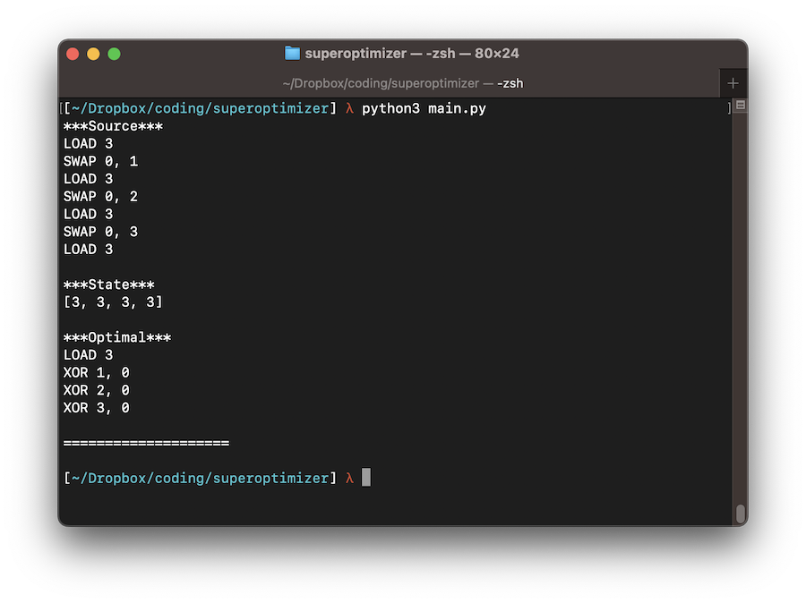
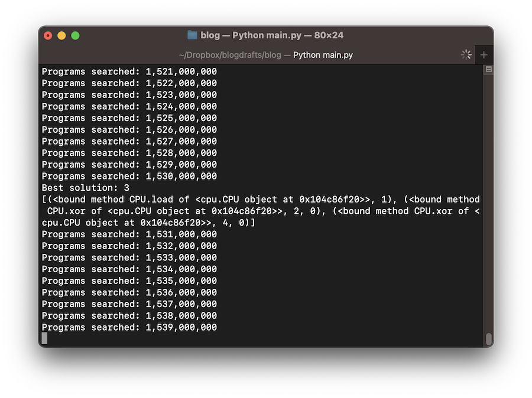

Associate Teaching Professor
Carnegie Mellon University
See the discussion of this post on Hacker News.
It's time for another useless project.
For any given code snippet, is it possible to find the absolute optimal code that has the same output? Years ago I stumbled on this concept, known as superoptimization. It isn't practical but the idea has been stuck in my head.
The way it works: generate every possible permutation of code instructions and test each generated program for equivalence to the original program. That's basically it. As you can imagine, the space of possible programs quickly explodes, and testing two programs for equivalence also isn't easy. But if it was possible on computers back in 1987 then surely my computer can handle it.
I'm going to try building a toy superoptimizer.
To make this feasible, I'm going to make up a fictional assembly language with only a few instructions. I'll need to write an emulator that executes programs in order to show whether two programs are equivalent. The optimizer will then generate every possible program in this language given some set of constraints and return the shortest one.
I broke the project up into chunks:
The source code can be found on GitHub.
I want to limit this to only a few instructions, but make sure they are interesting enough that the superoptimizer can find optimizations that aren't obvious to me.
Remember, the goal is not to come up with a comprehensive, real-world assembly language, but rather to learn about superoptimizers.
To start, I somewhat arbitrarily chose:
You'll see that these are quite boring. There isn't even a control flow instruction! It will be trivial to add more later though.
Writing the emulator is surprisingly easy. The memory state is a list of numbers and a program is a list of instructions with operands. Execute all the instructions and return the final state of the memory as the result.
class CPU:
def __init__(self, max_mem_cells):
self.max_mem_cells = max_mem_cells
self.state = [0] * max_mem_cells
self.ops = {'LOAD': self.load, 'SWAP': self.swap, 'XOR': self.xor, 'INC': self.inc}
def execute(self, program):
state = self.state.copy()
for instruction in program:
op = instruction[0]
args = list(instruction[1:])
args.insert(0, state)
state = op(*args)
return state
An instruction is a reference to the function that performs the operation:
def load(self, state, val):
state[0] = val
return state
def swap(self, state, mem1, mem2):
state[mem1], state[mem2] = state[mem2], state[mem1]
return state
def xor(self, state, mem1, mem2):
state[mem1] = state[mem1] ^ state[mem2]
return state
def inc(self, state, mem):
state[mem] += 1
return state
That is it for the emulator.
To make it easier to use, I also implemented a function that takes human-readable assembly and converts it to a program as well as a function that takes a program and converts it to human-readable assembly. They aren't particularly interesting, but you can see them here: assembler.py.
Now for the fun part. Generate every possible program.
class Superoptimizer:
def generate_programs(self, cpu, max_length, max_mem, max_val):
for length in range(1, max_length + 1):
for prog in product(cpu.ops.values(), repeat=length):
arg_sets = []
for op in prog:
if op == cpu.load:
arg_sets.append([tuple([val]) for val in range(max_val + 1)])
elif op == cpu.swap or op == cpu.xor:
arg_sets.append(product(range(max_mem), repeat=2))
elif op == cpu.inc:
arg_sets.append([tuple([val]) for val in range(max_mem)])
for arg_set in product(*arg_sets):
program = [(op, *args) for op, args in zip(prog, arg_set)]
yield program
Don't let this function overwhelm you. It is generating every possible program based on several variables: program length, number of instructions, and number of possible operands (size of memory or the maximum value). I turned it into a generator because the first version was causing my laptop to run out of memory.
What is the computational complexity of this? Terrible.
We will use this to test every program:
def search(self, max_length, max_mem, max_val, target_state):
cpu = CPU(max_mem)
for program in self.generate_programs(cpu, max_length, max_mem, max_val):
state = cpu.execute(program)
if state == target_state:
state = tuple(state)
if state not in self.program_cache or len(program) < len(self.program_cache[state]):
self.program_cache[state] = program
return self.program_cache.get(tuple(target_state), None)
The search function takes the constraints and the target state as parameters. It considers two programs as equivalent if both of their final memory states are identical. We can loosen this restriction later. It saves the shortest program with the correct state and eventually returns it when the search is complete.
It is time to put the superoptimizer to the test. Given a program, can it find the shortest program with the same end result?
My first program in the made-up assembly language:
LOAD 3 SWAP 0, 1 LOAD 3 SWAP 0, 2 LOAD 3 SWAP 0, 3 LOAD 3
The state of the finished program is [3, 3, 3, 3]. It is filling the finite memory with 3s.
What is the optimal code according to the superoptimizer?
LOAD 3 XOR 1, 0 XOR 2, 0 XOR 3, 0
It works!
The superoptimizer is using the XOR instruction to duplicate values and storing them in the appropriate location instead of LOAD and SWAP. Very cool, I didn't think of that.
Now for another test.
It is also possible to give the superoptimizer just the desired final state without first writing a program that produces it. So I can tell it to find the shortest program that results in state [0, 2, 1]. The optimal program:
LOAD 2 SWAP 0, 1 INC 2
It used the LOAD and SWAP pattern for the 2, but it used INC for the 1 since it takes one less instruction. Victory, again!
The performance is not good by any means. Searching for the final state [1, 0, 1, 0, 1, 0] with no more than 6 instructions and values only up to 2 caused the superoptimizer to generate 1,580,000,000 programs for 30+ minutes on my laptop before I killed it.
There are many improvements to be made:
Start state. The emulator assumes the start state is always the same: 0 for all memory locations. But really we want to allow different start states so that the program can take inputs, like fib(n), which would compute the n'th fibonacci number. We can do this by allowing the emulator to take a start state parameter that sets the first subset of memory values.
Program equivalence. To better support program equivalence, including inputs and outputs, like showing fib(n) is equivalent to opt_fib(n), then we also need a notion of output. This can be another parameter that defines the output as the first x memory cells when the program finishes. Additionally, we need a function to show that the equivalence stands for multiple inputs. It is probably good enough to test a predefined set of integers for every input rather than testing them all exhaustively.
Pruning. The superoptimizer is searching through a ridiculous number of programs, many of which are nonsensical. For example, I peaked at thousands of generated programs and they were XORing zeros together repeatedly and overwriting unused values. It'll complicate the generation function, but it will reduce the search space dramatically.
More instructions. Given the limited instruction set, the superoptimizer won't be able to discover more interesting patterns. The first thing I would add is some sort of conditional instruction so it can act on inputs. Like CMP mem, mem which sets memory location 0 to a specific value depending on if the first operand's value is greater than, less than, or equal to the second. Then I'd add whatever else is needed to implement classic functions like fib(n) and max(a, b), probably ADD and SUB. Classic compilers are great about replacing conditionals with arithmetic so it would be a good test for a superoptimizer. Be careful with emulating jumps though since you won't know if the program ever terminates!
Please let me know if you manage to make any improvements to the superoptimizer. It would be fun to continue working on it. You can find all of the source on GitHub.
If you're interested in learning more about compilers, see my tutorial series: Let's make a Teeny Tiny compiler.